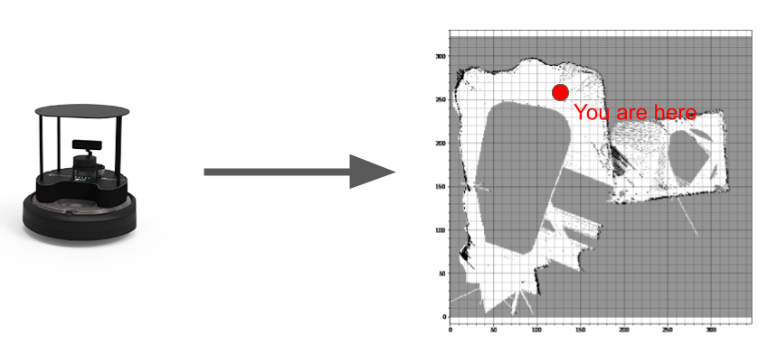

In robotics, Simultaneous Localization and Mapping (SLAM) is the problem of mapping an unknown environment. Localization is a necessary component for this goal because the robot can only add what it sees if it knows where it is. Over the years, many implementations of SLAM have arisen that use a variety of sensor types. Implementations commonly use cameras and LiDAR, but researchers have explored using sound and even WiFi.
SLAM is used on a variety of autonomous robots including self-driving cars, roombas, autonomous underwater vehicles, and unmanned aerial vehicles. More generally, it is often a prerequisite to effective autonomous behavior because an understanding of one's surroundings influences decision making.
Sensor measurements are not perfect. While one might expect that we can simply track how much movement occurred and make a map from that information, this info is subject to drift. Essentially, over time small disturbances in data accumulate to tamper with the overall efficacy of such an approach. Different SLAM algorithms raise several methods of addressing drift, with a common theme being loop closure–a method of eliminating drift through repeated views of the same scene.
Our comps group split into two teams. One team made a system that creates maps of enviroments from video feeds. The other team made a system that creates maps using LiDAR input data and a mobile robot called the Turtlebot4